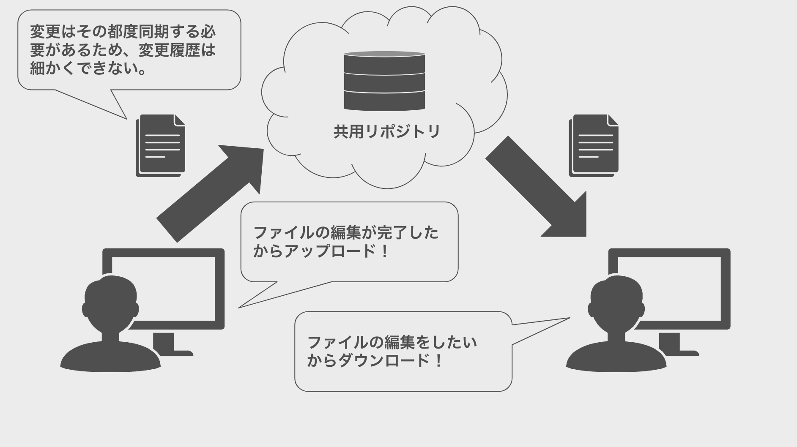
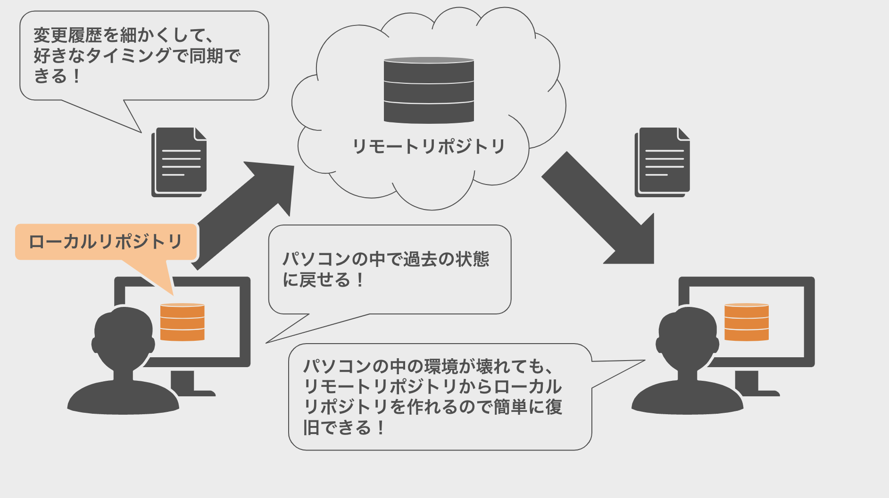

Git の基本
Git の基本
皆さんがこれから学ぶのは Git は、ファイルの変更履歴を記録できるバージョン管理システムです。
以下は Git を活用した場合のメリットの一部です。このように Git を活用するとより効率的に開発を進めることができます。
- 編集したファイルを過去の状態に戻すことができる
- 複数人で同じファイルを同時に編集することができる
- 編集の意図をコメントして残すことができる
本チャプターでは Git の基本を実際にコマンドを実行していきながら学んでいきます。
まずは Git のことを知る前に、事前知識としてリポジトリとバージョン管理システムの概要から理解していきましょう。
リポジトリとは
突然ですが、パソコンで作成したファイルはファイルはどこに保存されているかを意識していますか？
後で探しやすいようにデスクトップに格納する場合もあれば、書類であればドキュメントフォルダに格納することもあるでしょう。
しかし、そこに格納されているのはファイル本体だけで、ファイルの変更履歴は残っていません。
一方でファイルだけでなく、そのファイルの変更履歴を記録することができるのがリポジトリです。
リポジトリは通常のディレクトリ（フォルダ）とは異なり変更履歴を記録しているため、過去の状態を確認したり、過去の状態に戻すことができます。
リポジトリの作り方は後ほど解説しますが、この後リポジトリという用語が何度も登場するので用語の意味をしっかり覚えておきましょう。
リポジトリ：ファイルやその変更履歴の格納場所
バージョン管理システムとは
バージョン管理システムはその名の通り、ファイルの変更履歴（バージョン）を管理するシステムです。
チームでクラウド（ネットワーク）上にあるリポジトリを共有することで手分けをしながら作業ができるようになります。
ファイルに対して誰が、いつ、どのような変更をしたのかを記録することができます。
この記録は先述したリポジトリに蓄積されていきます。
また、変更内容の差分を確認したり、任意のバージョンに戻すことができます。
バージョン管理システム：ファイルに対して「誰が」「いつ」「どのような変更をしたか」を記録し、変更の差分や変更前の状態に復元することができるシステム
バージョン管理システムには 分散型 と 集中型 の２種類があります。
Git は分散型に分類されるのですが、それぞれの違いについて確認していきましょう。
集中型バージョン管理システム
集中型はリポジトリはクラウド（ネットワーク）に１つのみ存在し、チームメンバーはこのリポジトリに接続して作業を行います。
仕組みは至ってシンプルで、チームメンバーは各自必要なファイルのみをダウンロードして編集します。
編集を終えたら、その編集履歴をクラウド（ネットワーク）上にあるリポジトリにアップロードするという流れになります。

分散型と異なるのは変更を加えた場合はその都度アップロードをする必要があることです。
そのため、集中型には以下のデメリットがあります。
- 作業が完了していない状態（エラーが発生する状態）でアップロードをすると、チームメンバーに悪影響を与える可能性があります。
- 必要なファイルのみをダウンロードしているため、アップロードしてみないとテストができない。
分散型バージョン管理システム
リポジトリはクラウド（ネットワーク）上に１つだけではなく、各チームメンバーのデバイス内にも存在します。
各メンバーは自身のデバイス内のリポジトリに対して、ファイルの編集内容を記録していき、
最終的にはデバイス内リポジトリとクラウド（ネットワーク）上のリポジトリを統合（マージ）します。

そのため、分散型には以下のメリットがあります。
- 自身の編集（コミット）が他のメンバーへ影響を与えない。
- ローカルリポジトリでテストをしてからリモートリポジトリで共有できる。
また、このリポジトリはローカルリポジトリとリモートリポジトリの2種類に分けられます。
ローカルリポジトリは操作しているデバイスの中にあるリポジトリのことを指します。
自身のみがアクセスして編集を行うためのリポジトリで、基本的にこのローカルリポジトリでファイルを編集します。
一方のリモートリポジトリはその名の通り操作しているデバイスの中にはなくクラウド（ネットワーク）上にあるリポジトリで、複数のチームメンバーと共有することができます。
個人の作業をローカルリポジトリで行い、その作業で作成したファイルをリモートリポジトリにアップロードすることで他のチームメンバーと共有できる仕組みになっています。
アップロードしない限りチームメンバーにファイルを共有することができませんが、ローカルリポジトリでエラーが発生したとしてもアップロードしない限りチームメンバーに影響与えることはありません。
ローカルリポジトリ： 操作しているデバイスの中にある自分専用のリポジトリ
リモートリポジトリ：クラウド（ネットワーク）上にある共有のリポジトリ
ちなみに、Git はこの分類型バージョン管理システムに該当します。
必要となる事前知識はここまでです。ここからは本格的に Git を学んでいきましょう。
Git とは
Git は分散型バージョン管理システムでファイルを管理するシステムの１つです。
この Git を活用することでリポジトリを作り、ファイルの履歴管理をすることができます。
Git の使い方についてはこれから実際に試しながら学んでいきましょう。
また、Git を触っていると以下のようなハッシュ値をよく見かけると思います。
以下は後々登場する Git のコミットログです。
commit 5c670db6fc4a8d109a5e2724c421cd8105c2598f (HEAD -> master)
実は Git により自身の編集（コミット）ごとに重複することのないハッシュ値が割り当てられています。 このハッシュ値はSHA-1ハッシュと呼ばれており、16進数の文字（0-9とa-f）で構成された40文字の文字列です。 ファイルの内容もしくは Git 内のディレクトリ構造を元に計算されます。
これは Git が内部でもっているデータベースの中で管理するために割り当てられているのです。
そのため、Git はこのファイルはいつどのように変更したのかという観点は意識しておらず、
この編集でどのファイルをどのように変更したのかという観点で管理をしています。
Git を始めてみよう
Git の公式サイトからインストーラーをダウンロードすることができます。
以下のURLからインスト＝ラーをダウンロードして Git をインストールしましょう。
https://git-scm.com/downloads
Git のインストールが完了しましたら、インストールが完了できているかを確認しましょう。
ターミナルを起動して、インストールされている Git のバージョンを確認するコマンドを実行しましょう。
以下のコマンドを実行して、git version X.X.X (※) がターミナル上に表示されればインストールは完了できています！
※Xの部分には数値が表示されます。
git --version
Git のインストールができていることが確認できたら、続いて初期設定を進めていきましょう。
Git は「誰が」が残した履歴なのかを記録していくため、Git のユーザー情報（ユーザー名とメールアドレス）を登録する必要があります。
ユーザー名は以下のコマンドで登録することができます。
※“XXXXXX”の箇所は任意のアカウント名を指定してください。後ほど設定する GitHub のアカウント名と同じである必要があります。
git config --global user.name “XXXXXX”
メールアドレスは以下のコマンドで登録することができます。
※“XXXXX@XXXXXX”の箇所は任意のメールアドレスを指定してください。後ほど設定する GitHub のアカウントのメールアドレスと同じである必要があります。
git config --global user.email "XXXXX@XXXXXX"
ユーザーの情報が正しく設定されているかは以下のコマンドで確認することができます。
コマンド実行後に設定したアカウント名とメールアドレスが表示されればOKです。
git config user.name
git config user.email